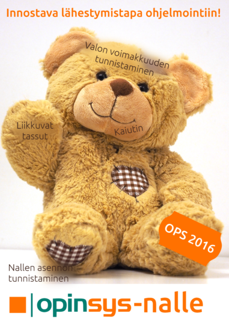

Ohjelmointi perusopetuksessa
Opetushallitus on sisällyttänyt ohjelmoinnin perusopetuksen opetussuunnitelman perusteisiin (Tiedote 22.12.2014). Käytännössä tämä tarkoittaa sitä, että peruskoulussa opetetaan kaikilla vuosiluokilla ohjelmointia syksystä 2016 alkaen. Tällä sivustolla on avoimella lisenssillä (CC-BY) julkaistua materiaalia opettajien koulutukseen ja ohjelmoinnin opetukseen perusopetuksessa. Sivulla on lisäksi linkkejä muihin aiheeseen liittyviin sivustoihin.
Ohjelmoinnin alkeiskoulutus alakoulun opettajille
Uudessa opetussuunnitelma ohjelmoinnin opetus aloitetaan jo ensimmäisillä luokilla. Materiaali on yhdelle koulutuspäivälle, jossa käydään läpi ohjelmoinnin opetus 1-6 luokka-asteelle opetussuunnitelman perusteluiden mukaisesti.
Ohjelmoinnin ja robotiikan koulutus opettajille
Koulutuksessa perehdytään ohjelmoinnin lisäksi robotiikan alkeisiin. Työkaluna käytetään Opinsys-nallea, joka perustuu avoimen lähdekoodin Arduino-ympäristöön. Koulutuksessa opittuja asioita voidaan hyödyntään minkä tahansa Arduino-pohjaisen ohjelmoinnin parissa.
Opinsys-nalle
Nalle helpottaa ohjelmoinnin oppimista ja tekee siitä kiehtovaa ja mielenkiintoista. Suomenkielisen visuaalisen sovelluksen avulla ohjelmointi onnistuu hyvin jo alakoululaiselta.
Ajankohtaisia esitysmateriaaleja
- Ohjelmointikoulutus 2017.
- Teknologiaseikkailut 2016 Nalle-ohjelmointi.
- Ohjelmointikoulutus Äänekoskella 3.-4.2.2015.
- Ohjelmointikoulutus Kortepojan koulussa 2.2.2015.
- Ilo-päivät Kuopiossa 29.-30.10.2015
- Ilo-päivät Kuopiossa 29.-30.10.2015
- Teknologiaseikkailu Vihdin pääkirjastolla 20.-22.10.2015
- Oppiainerajat ylittävää ohjelmointia (MAOL) 2.-3.10.2015
- Vitikkalan koulun teknologiapäivä 29.-30.9.2015
- Ohjelmointikoulutus Jäälin koululla 11.5.2015
- Otsonkoulun teknologiapäivä 4.5.2015
- KuumaPop, Robottinalle ohjelmoinnin opetuksessa 23.4.2015
- Oppiainerajat ylittävää ohjelmointia (MAOL) 18.4.2015
- Tulevaisuus haastaa oppimisen 27.3.2015
- Kummun koulun teknologiapäivä 13.1.2015
Koodaustunti on yhden tunnin mittainen johdatus tietojenkäsittelytieteeseen, joka toteutetaan haluamanasi ajankohtana. Koodaustunnin tarkoituksena on tutustuttaa "koodaamiseen" ja tehdä sitä arkipäiväiseksi.
Koodi2016-opas ja -verkkosivusto kertovat opettajille ja opetusalan päättäjille, miksi ohjelmointi on tärkeää ja miten sitä voi opettaa. Alla oppaan sisältö on tiivistetty yhdeksään kohtaan.